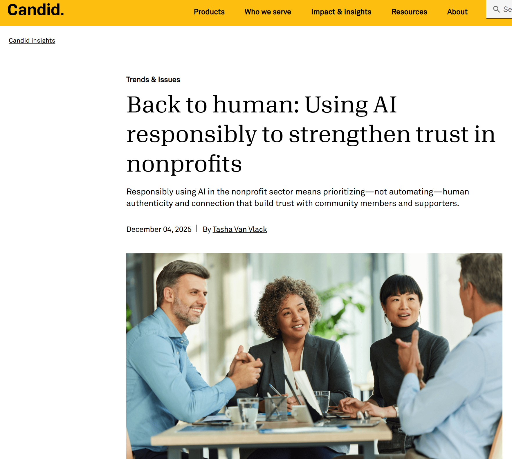

I came across this piece by Tasha Van Vlack on Candid Insights — a timely reminder as we head into 2026. AI is already woven into everyday nonprofit work (drafting, summarizing, translating, reporting). The question is whether we adopt it in ways that increase trust, or quietly chip away at it.

A few lines that stayed with me:
- Trust is the sector's core asset, and AI can either strengthen or erode it.
- Curiosity is high, but readiness is not — only a small minority feel ready to use AI responsibly, and even fewer have policies in place.
- The real opportunity is to use AI to buy back time for the work that only humans can do: listening, relationships, empathy, and accountability.
- For nonprofit leaders, this is a practical prompt: write the policy, set the boundaries on data, create space for staff dialogue, and measure success in trust and outcomes, not just speed.
- For funders, it is a clear call to invest in readiness and infrastructure, not only "innovation pilots."